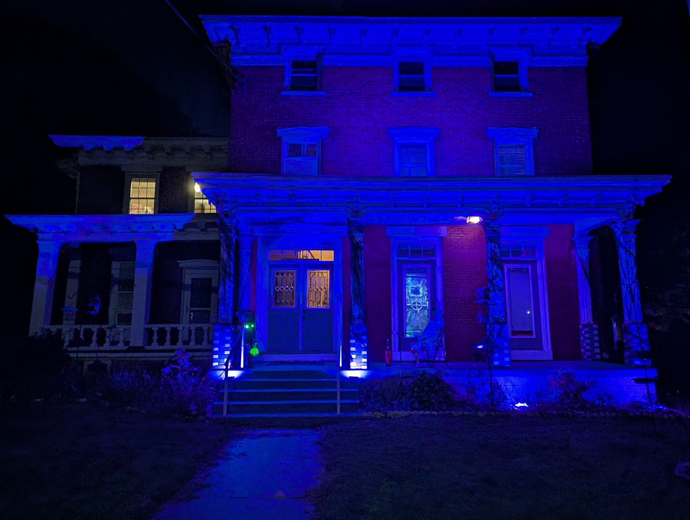
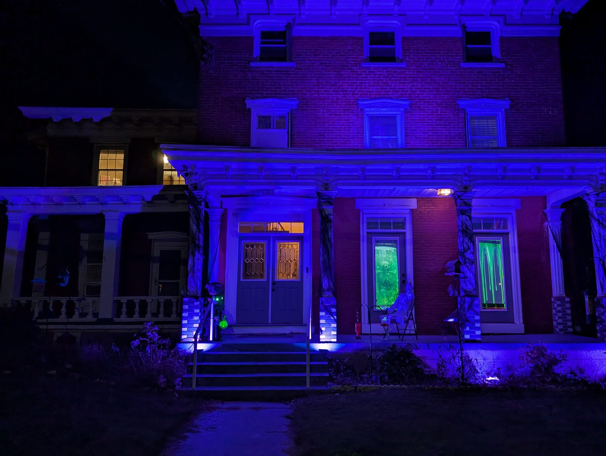
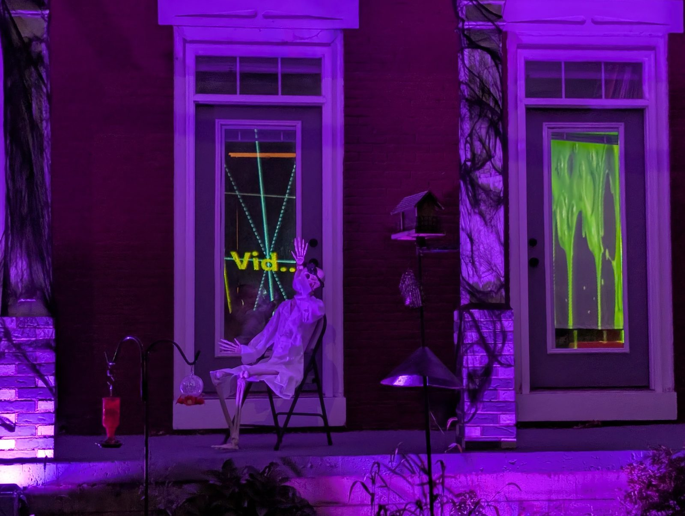

Why this exists
SurfaceCast was not built for a venue. It was built to run the show on one house on October 31st, and everything about the way it works still comes from that night.
One projector, indoors, throwing the picture out through two tall windows onto rear-projection fabric. A strip along the porch that has to agree with what those windows are doing. A strobe and a smoke machine on the display out front. Audio outside. Four different kinds of thing, one program, and nobody free to stand over any of it while people come up the driveway.
Rear projection, from inside the house, onto fabric hung in the openings - and the projector is square to neither of them. Each layer is keystoned into its own window before the picture lines up with the frame. A projector facing a flat wall is the easy case, and almost nothing real is that.
A strip along the porch and a projection in the windows look wrong the moment they disagree. Zones sample the real output and drive the strip from it over WLED, so the porch follows the video rather than being programmed a second time and drifting away from it.
The strobe and the smoke machine on the display out front run on DMX, the audio plays outside, and every bit of it is cued from the same program as the video. Nothing here is a second application with its own timeline to be kept in step by hand.
Hours of looping video with nobody watching the console. Memory is bounded on purpose, nothing reaches the projector by accident, and unsaved work is kept aside so a crash at nine o'clock is not the end of the evening.
A real night, a real house, and the program running it is the one on the download page.



A church wall behind a band, a set piece in a school hall, a themed room that has to change on a cue - none of them are flat rectangles either, and none of them have a spare operator to stand at a desk all night. What the house asked for turned out to be what everybody else needed too.